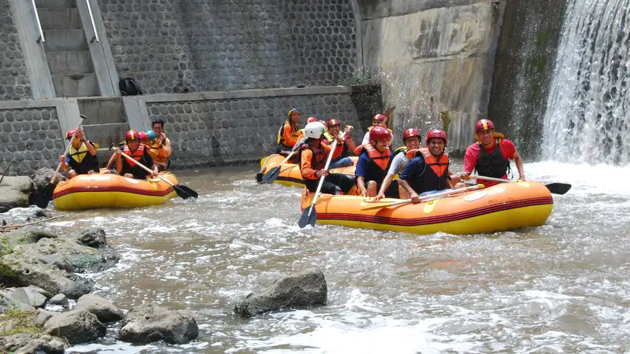

Rafting Malang adalah aktivitas arung jeram yang banyak dilakukan di sepanjang Sungai Kasembon dan Kali Konto, dengan kisaran harga paket bervariasi tergantung jarak tempuh dan fasilitas operator.
- Lokasi rafting utama di Malang berada di kawasan Kasembon dan aliran Kali Konto yang berbatasan dengan wilayah Kediri.
- Harga paket rafting umumnya dibedakan berdasarkan jarak tempuh, mulai dari rute pendek hingga rute panjang.
- Operator rafting yang bersertifikasi umumnya menyediakan pelampung, helm, dan instruktur pendamping di setiap perahu.
- Rafting di Malang dapat diikuti pemula karena sebagian besar rute tergolong jeram kelas II hingga III.
- Musim kemarau umumnya menjadi waktu yang lebih stabil untuk aktivitas rafting dibandingkan musim hujan.
Rafting menjadi salah satu daya tarik wisata petualangan yang cukup populer di wilayah selatan dan barat Kabupaten Malang. Aktivitas ini memadukan sensasi mengarungi jeram sungai dengan pemandangan alam pedesaan khas Jawa Timur, sehingga banyak diminati wisatawan domestik maupun rombongan dari luar kota.
Menurut informasi yang umum beredar dari operator wisata air di kawasan Kasembon, jumlah kunjungan peserta rafting cenderung meningkat pada periode liburan sekolah dan akhir tahun dibandingkan hari kerja biasa. Pola kunjungan musiman ini membuat sejumlah operator menyesuaikan kapasitas perahu dan jadwal keberangkatan, khususnya selama periode Juni hingga Agustus setiap tahunnya.
Apa Itu Rafting Malang
Rafting Malang merujuk pada aktivitas arung jeram yang dilakukan di sungai-sungai wilayah Kabupaten Malang, terutama di sekitar Kasembon yang dialiri Kali Konto. Sungai ini memiliki karakter jeram yang cukup stabil sepanjang tahun karena dipengaruhi oleh aliran dari bendungan di hulu, sehingga debit air relatif terkendali dibanding sungai alami lainnya.
Untuk Siapa Rafting Malang Cocok Dilakukan
Rafting di Malang secara umum cocok untuk berbagai kalangan, mulai dari wisatawan individu, keluarga, komunitas, hingga rombongan instansi atau sekolah. Sebagian besar rute yang ditawarkan operator tergolong ramah pemula, meskipun tetap disarankan peserta dalam kondisi fisik yang sehat dan mengikuti arahan instruktur selama kegiatan berlangsung.
Mengapa Rafting Malang Banyak Diminati
Popularitas rafting Malang didorong oleh kombinasi antara akses yang relatif mudah dari kota Malang maupun Kediri, pemandangan alam pedesaan yang masih asri, dan variasi rute yang dapat disesuaikan dengan waktu kunjungan wisatawan. Faktor kedekatan dengan destinasi wisata lain di kawasan Batu dan Malang juga membuat rafting kerap dijadikan agenda tambahan dalam satu perjalanan wisata.
Di Mana Lokasi Rafting Terbaik di Malang
Lokasi rafting terbaik di Malang umumnya terpusat di kawasan Kasembon yang dialiri Kali Konto, dengan beberapa operator menyediakan titik start dan finish yang berbeda sesuai paket yang dipilih.
Kawasan Kasembon menjadi pusat utama aktivitas rafting karena karakter arus Kali Konto yang mendukung kegiatan arung jeram sepanjang tahun. Selain Kasembon, sejumlah operator juga menawarkan rute alternatif di aliran sungai lain di sekitar Malang, meskipun dengan jumlah operator yang lebih terbatas dibandingkan Kasembon.
Bagaimana Akses Menuju Lokasi Rafting di Malang
Akses menuju lokasi rafting di Kasembon dapat ditempuh dari arah Kota Malang maupun dari arah Kediri, karena posisinya yang berada di perbatasan kedua wilayah tersebut. Sebagian besar operator menyediakan titik penjemputan atau petunjuk arah yang jelas menuju basecamp masingmasing, sehingga wisatawan dari luar kota tidak perlu khawatir tersesat.
Berapa Kisaran Harga Paket Rafting di Malang
Kisaran harga paket rafting di Malang umumnya dibedakan berdasarkan jarak tempuh sungai, mulai dari rute pendek hingga rute panjang, dengan fasilitas standar berupa pelampung, helm, dan instruktur pendamping.
Setiap operator biasanya menawarkan beberapa pilihan jarak tempuh yang memengaruhi durasi kegiatan dan tingkat tantangan yang dirasakan peserta. Semakin panjang jarak tempuh yang dipilih, umumnya semakin tinggi pula harga paket yang ditawarkan, karena mencakup waktu pemakaian perahu dan tenaga instruktur yang lebih lama.
Apa Saja yang Memengaruhi Harga Paket Rafting
Harga paket rafting dipengaruhi oleh beberapa faktor, di antaranya jarak tempuh sungai, jumlah peserta dalam rombongan, fasilitas tambahan seperti dokumentasi foto atau video, serta layanan penunjang seperti makan siang dan transportasi antar-jemput. Operator dengan fasilitas lebih lengkap umumnya menetapkan harga yang sedikit lebih tinggi dibandingkan paket standar.
Bagaimana Cara Memilih Operator Rafting yang Aman di Malang
Cara memilih operator rafting yang aman di Malang adalah dengan memastikan instruktur bersertifikat, perlengkapan keselamatan dalam kondisi layak, dan reputasi operator dapat ditelusuri melalui ulasan wisatawan sebelumnya.
Keselamatan menjadi aspek utama yang perlu diperhatikan sebelum memilih operator rafting. Operator yang kredibel umumnya memiliki instruktur bersertifikasi dari lembaga terkait wisata arung jeram, serta rutin melakukan pengecekan kondisi perahu dan alat keselamatan sebelum digunakan.
Apa Ciri Operator Rafting Tepercaya
Operator rafting yang tepercaya biasanya memberikan pengarahan keselamatan atau safety briefing sebelum kegiatan dimulai, menyediakan pelampung dan helm dalam kondisi baik untuk setiap peserta, serta menempatkan instruktur pendamping di setiap perahu. Transparansi informasi mengenai rute, durasi, dan risiko kegiatan juga menjadi indikator penting operator yang mengutamakan keselamatan peserta.
Apa Saja Perlengkapan dan Persiapan Rafting Malang
Perlengkapan dan persiapan rafting Malang mencakup pakaian yang cepat kering, sandal gunung atau sepatu khusus air, serta kondisi fisik yang sehat sebelum mengikuti kegiatan.
Peserta disarankan mengenakan pakaian yang nyaman dan tidak mudah menyerap air dalam jumlah besar, seperti bahan olahraga berbahan cepat kering. Barang berharga seperti ponsel dan dompet sebaiknya dititipkan di loker yang biasanya disediakan operator, kecuali menggunakan pelindung tahan air khusus.
Apakah Rafting Aman untuk Pemula dan Anak-Anak
Rafting di sebagian besar rute Malang tergolong aman untuk pemula karena umumnya berada pada kelas jeram menengah yang tidak terlalu ekstrem. Untuk anak-anak, sebagian operator menetapkan batas usia dan tinggi badan minimum sebagai bagian dari standar keselamatan, sehingga sebaiknya dikonfirmasi langsung kepada operator sebelum melakukan reservasi.
Kapan Waktu Terbaik Melakukan Rafting di Malang
Waktu terbaik melakukan rafting di Malang umumnya berada pada musim kemarau, karena debit air cenderung lebih stabil dibandingkan musim hujan yang berisiko meningkatkan arus secara tiba-tiba.
Meski demikian, aktivitas rafting di Kasembon tetap dapat berlangsung sepanjang tahun karena dipengaruhi oleh pengaturan debit air dari bendungan di bagian hulu sungai. Operator biasanya akan memberikan informasi terkini mengenai kondisi cuaca dan keamanan sebelum keberangkatan, khususnya saat musim hujan.
Kesalahan Umum yang Perlu Dihindari Saat Rafting
Beberapa kesalahan umum yang perlu dihindari saat rafting di Malang antara lain tidak mengikuti instruksi instruktur, melepas pelampung secara sengaja saat kegiatan berlangsung, serta tidak menginformasikan riwayat kesehatan tertentu kepada operator sebelum kegiatan dimulai.
Kesalahan lain yang cukup sering terjadi adalah membawa barang elektronik tanpa pelindung tahan air yang memadai, sehingga berisiko rusak akibat terkena percikan maupun terendam air selama perjalanan. Peserta juga disarankan untuk tidak memaksakan diri mengikuti rute panjang apabila kondisi fisik sedang kurang optimal.
FAQ
Apakah rafting Malang cocok untuk pemula?
Rafting di sebagian besar rute Malang tergolong ramah pemula karena berada pada kelas jeram menengah, dengan pendampingan instruktur di setiap perahu.
Berapa lama durasi rafting di Malang?
Durasi rafting bervariasi tergantung jarak tempuh yang dipilih, mulai dari sekitar satu jam untuk rute pendek hingga lebih dari dua jam untuk rute panjang.
Apakah rafting Malang buka setiap hari?
Sebagian besar operator rafting di Malang beroperasi setiap hari, namun disarankan melakukan reservasi terlebih dahulu terutama saat akhir pekan atau musim liburan.
Arya
Penulis artikel yang sudah berpengalaman di dalam dunia wisata outbound Batu Malang.